import warnings
import sys
sys.path.insert(0, '..')
import arviz as az
import bambi as bmb
import matplotlib.pyplot as plt
import numpy as np
import pandas as pd
import xarray as xr
from cmdstanpy import CmdStanModel, disable_logging
from scipy.special import expit
from scipy.stats import rankdata
from utils import print_stan
from plot_functions import plot_logit, plot_logit_grid, plot_logit_grid_2, plot_irt
warnings.filterwarnings("ignore", category=FutureWarning)
disable_logging()
az.style.use("arviz-variat")
az.rcParams["stats.ci_prob"] = 0.95
plt.rcParams["figure.dpi"] = 72
SEED = 123
np.random.seed(SEED)Modeling performance on a multiple choice exam
This notebook includes the code for the Bayesian Workflow book Chapter 4 Introduction to workflow: Modeling performance on a multiple choice exam.
1 Introduction
We demonstrate with an example from Section 4.15 of Gelman and Vehtari (2024), assessing the grading of a multiple-choice test. We analyze data from a 24-question final exam from a class of 32 students, where our applied goal is to check that the individual test questions are doing a good job at discriminating between poorly- and well-performing students. No external data are available on the students, so we assess their abilities using their total score on the exam.
Each item is a multiple choice question with 4 possible answers and is scored either 1 (correct) or 0 (incorrect). The total scores across the 24 question exam range from 12 to 21, with an average of 16. Across the questions the hardest question has 4 of the 32 students answering it correctly, while all students manage to answer the easiest question correctly.
Load packages
2 Stan models
Compile all Stan programs to use throughout the file
logit_0 = CmdStanModel(stan_file="logit_0.stan")
logit_prior = CmdStanModel(stan_file="logit_prior.stan")
logit_guessing = CmdStanModel(stan_file="logit_guessing.stan")
logit_guessing_uncentered = CmdStanModel(stan_file="logit_guessing_uncentered.stan")
logit_threshold = CmdStanModel(stan_file="logit_threshold.stan")
logit_threshold_prior = CmdStanModel(stan_file="logit_threshold_prior.stan")
logit_guessing_multilevel = CmdStanModel(stan_file="logit_guessing_multilevel.stan")
logit_guessing_uncentered_multilevel = CmdStanModel(stan_file="logit_guessing_uncentered_multilevel.stan")
logit_guessing_multilevel_bivariate = CmdStanModel(stan_file="logit_guessing_multilevel_bivariate.stan")
logit_guessing_multilevel_bivariate_cholesky = CmdStanModel(stan_file="logit_guessing_multilevel_bivariate_cholesky.stan")
irt_guessing = CmdStanModel(stan_file="irt_guessing.stan")
irt_guessing_discrimination = CmdStanModel(stan_file="irt_guessing_discrimination.stan")3 Data
Read in data and construct score for each student
responses = pd.read_csv("data/final_exam_responses.csv")
answers = pd.read_csv("data/final_exam_answers.csv")
J = len(responses) # number of students
K = len(responses.columns) # number of items
# Create correct answers array
correct = np.zeros((J, K), dtype=int)
for k in range(K):
correct[:, k] = (responses.iloc[:, k] == answers.iloc[0, k]).astype(int)
score = np.sum(correct, axis=1)
item = np.sum(correct, axis=0)
# Summary statistics
print("Score summary:")
print(pd.Series(score).describe().round(2))
print("Item summary:")
print(pd.Series(item).describe().round(2))Score summary:
count 32.00
mean 16.09
std 2.29
min 12.00
25% 14.75
50% 16.00
75% 17.00
max 21.00
dtype: float64
Item summary:
count 24.00
mean 21.46
std 8.16
min 4.00
25% 15.25
50% 24.00
75% 27.25
max 32.00
dtype: float64# Add jitter (random noise) to scores
score_jitt = score + np.random.uniform(-0.3, 0.3, J)
# Standardized scores
score_adj = (score - score.mean()) / score.std()
# Standardized jittered scores (using original score mean/std)
score_adj_jitt = (score_jitt - score.mean()) / score.std()
# Data for Stan (note: y should be a single column for the model)
data = {
"J": J,
"x": score.tolist(),
"y": correct[:, 0].tolist() # Select first item - change index as needed
}
# Item IDs as letters (only works if K <= 26)
item_id_0 = [chr(65 + j) for j in range(K)] # A, B, C, ...4 Simple models
4.1 Base model logit_0
print_stan(logit_0)
dt = az.from_cmdstanpy(logit_0.sample(data=data, show_progress=False))data {
int J;
array[J] int<lower=0, upper=1> y;
vector[J] x;
}
parameters {
real a, b;
}
model {
y ~ bernoulli_logit(a + b*x);
}plot_logit(
dt,
"Fit to item A on exam",
"Score on exam",
correct[:, 0],
score_jitt,
guessprob=0
)
az.summary(dt)| mean | sd | eti95_lb | eti95_ub | ess_bulk | ess_tail | r_hat | mcse_mean | mcse_sd | |
|---|---|---|---|---|---|---|---|---|---|
| a | -11.5 | 4.7 | -22 | -2.4 | 482 | 533 | 1.01 | 0.22 | 0.17 |
| b | 0.82 | 0.32 | 0.22 | 1.5 | 493 | 528 | 1.01 | 0.014 | 0.011 |
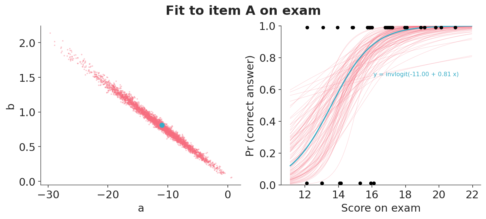
4.2 Add priors
print_stan(logit_prior)
data = {
"J": J,
"x": score_adj.tolist(),
"y": correct[:, 0].tolist(),
"mu_a": 0, "sigma_a": 5,
"mu_b": 0, "sigma_b": 5
}
dt = az.from_cmdstanpy(logit_prior.sample(data=data, show_progress=False))data {
int J;
array[J] int<lower=0, upper=1> y;
vector[J] x;
real mu_a, mu_b;
real<lower=0> sigma_a, sigma_b;
}
transformed data {
vector[J] x_adj = (x - mean(x))/sd(x);
}
parameters {
real a, b;
}
model {
a ~ normal(mu_a, sigma_a);
b ~ normal(mu_b, sigma_b);
y ~ bernoulli_logit(a + b*x_adj);
}plot_logit(
dt,
"Fit to item A: rescaled predictor and weakly informative prior",
"Standardized exam score",
correct[:, 0],
score_adj_jitt,
guessprob=0
)
az.summary(dt)| mean | sd | eti95_lb | eti95_ub | ess_bulk | ess_tail | r_hat | mcse_mean | mcse_sd | |
|---|---|---|---|---|---|---|---|---|---|
| a | 1.76 | 0.63 | 0.66 | 3.1 | 1155 | 1691 | 1.01 | 0.019 | 0.015 |
| b | 1.87 | 0.71 | 0.6 | 3.4 | 1194 | 1679 | 1.01 | 0.021 | 0.016 |
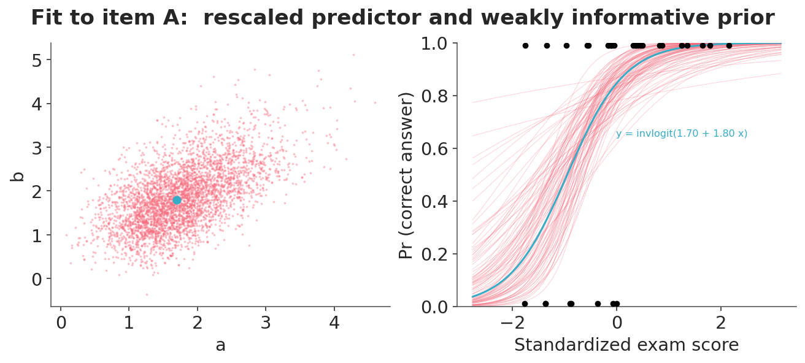
plot_logit_grid(
"Rescaled predictor and weakly informative prior",
"Standardized exam score",
logit_prior,
{
"J": data["J"],
"x": score_adj.tolist(),
"y": correct,
"mu_a": 0, "sigma_a": 5,
"mu_b": 0, "sigma_b": 5,
},
score_adj_jitt,
item_id_0,
guessprob=0
)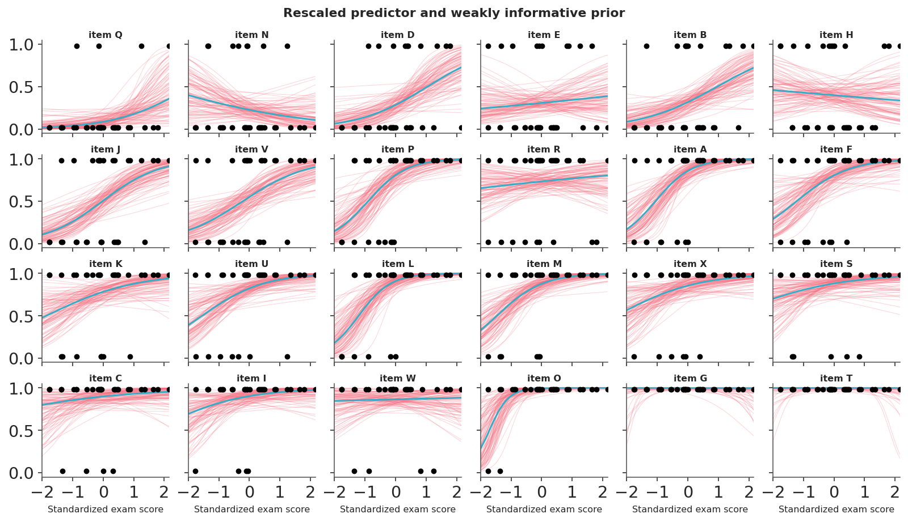
data_ = {
"J": data["J"],
"x": score_adj.tolist(),
"y": correct[:, 6].tolist(),
"mu_a": 0, "sigma_a": 5,
"mu_b": 0, "sigma_b": 5
}
dt = az.from_cmdstanpy(logit_prior.sample(data=data_, show_progress=False))plot_logit(
dt,
"Fit to item G: rescaled predictor and weakly informative prior",
"Standardized exam score",
correct[:, 6],
score_adj_jitt,
guessprob=0
)
az.summary(dt)| mean | sd | eti95_lb | eti95_ub | ess_bulk | ess_tail | r_hat | mcse_mean | mcse_sd | |
|---|---|---|---|---|---|---|---|---|---|
| a | 7.7 | 2.8 | 3.4 | 14 | 1299 | 1389 | 1.00 | 0.08 | 0.062 |
| b | 0 | 2.08 | -4 | 4.4 | 968 | 1384 | 1.00 | 0.067 | 0.049 |
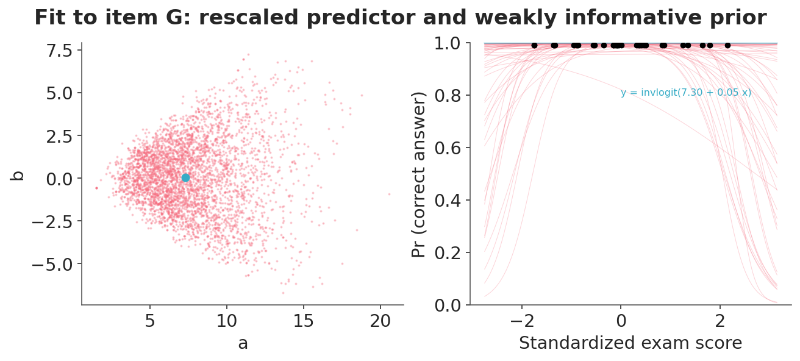
4.3 Fix the data problems
answers.iloc[0, [4, 13, 16]] = ["d", "d", "c"]
# Recalculate correct answers
correct = np.zeros((J, K), dtype=int)
for k in range(K):
correct[:, k] = (responses.iloc[:, k] == answers.iloc[0, k]).astype(int)
score = np.sum(correct, axis=1)
score_jitt = score + np.random.normal(0, 0.3, len(score))
score_adj = (score - score.mean()) / score.std()
score_adj_jitt = (score_jitt - score.mean()) / score.std()
data = {
"J": J,
"x": score.tolist(),
"y": correct.tolist()
}
item_id = rankdata(np.sum(correct, axis=0), method='ordinal').astype(int)_ = plot_logit_grid(
"After fixing the data problem",
"Standardized exam score",
logit_prior,
{
"J": data["J"],
"x": score_adj.tolist(),
"y": correct,
"mu_a": 0, "sigma_a": 5,
"mu_b": 0, "sigma_b": 5
},
score_adj_jitt,
item_id,
guessprob=0
)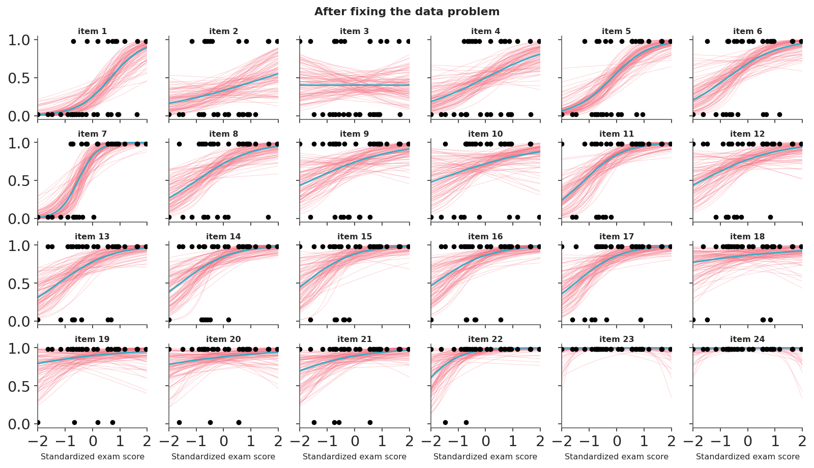
4.4 Allow for guessing
print_stan(logit_guessing)data {
int J;
array[J] int<lower=0, upper=1> y;
vector[J] x;
real mu_a, mu_b;
real<lower=0> sigma_a, sigma_b;
}
transformed data {
vector[J] x_adj = (x - mean(x))/sd(x);
}
parameters {
real a, b;
real<lower=0, upper=1> p0;
}
model {
a ~ normal(mu_a, sigma_a);
b ~ normal(mu_b, sigma_b);
y ~ bernoulli(0.25 + 0.75*inv_logit(a + b*x_adj));
}_ = plot_logit_grid(
"Probabilities constrained to range from 0.25 to 1",
"Standardized exam score",
logit_guessing,
{
"J": data["J"],
"x": score_adj.tolist(),
"y": correct,
"mu_a": 0, "sigma_a": 5,
"mu_b": 0, "sigma_b": 5
},
score_adj_jitt,
item_id,
guessprob=0.25
)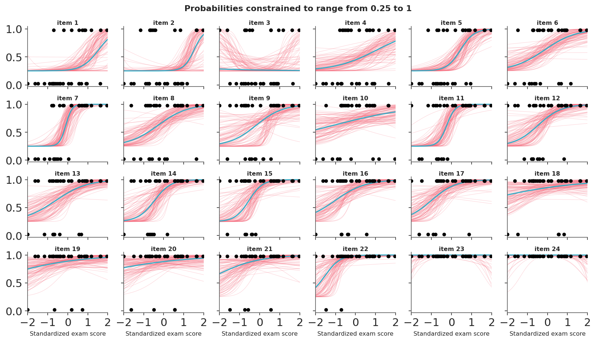
5 Multilevel models
In preparation for multilevel model, create long dataset
N = J * K
y = []
student = []
item = []
for j in range(J):
for k in range(K):
y.append(correct[j, k])
student.append(j + 1) # 1-indexed for Stan
item.append(k + 1) # 1-indexed for Stan
longdata = {
"N": N,
"J": J,
"K": K,
"student": student,
"item": item,
"y": y,
"x": score_adj.tolist()
}
longdata_ = {
**longdata,
"mu_mu_a": 0, "sigma_mu_a": 5,
"mu_mu_b": 0, "sigma_mu_b": 5,
"mu_sigma_a": 5, "mu_sigma_b": 5
}5.1 Multilevel model
print_stan(logit_guessing_multilevel)
dt_5 = az.from_cmdstanpy(logit_guessing_multilevel.sample(data=longdata_, show_progress=False))data {
int N; // number of observations
int J; // number of students
int K; // number of items on exam
array[N] int<lower=0, upper=J> student;
array[N] int<lower=0, upper=K> item;
array[N] int<lower=0, upper=1> y;
vector[J] x;
real mu_mu_a, mu_mu_b;
real<lower=0> sigma_mu_a, sigma_mu_b, mu_sigma_a, mu_sigma_b;
}
transformed data {
vector[J] x_adj = (x - mean(x))/sd(x);
}
parameters {
real mu_a, mu_b;
real<lower=0> sigma_a, sigma_b;
vector<offset=mu_a, multiplier=sigma_a>[K] a;
vector<offset=mu_b, multiplier=sigma_b>[K] b;
}
model {
a ~ normal(mu_a, sigma_a);
b ~ normal(mu_b, sigma_b);
mu_a ~ normal(mu_mu_a, sigma_mu_a);
mu_b ~ normal(mu_mu_b, sigma_mu_b);
sigma_a ~ exponential(1/mu_sigma_a);
sigma_b ~ exponential(1/mu_sigma_b);
y ~ bernoulli(0.25 + 0.75*inv_logit(a[item] + b[item] .* x_adj[student]));
}plot_logit_grid_2(
dt_5,
"Multilevel model, partially pooling across the 24 exam questions",
"Standardized exam score",
score_adj_jitt,
longdata["y"],
longdata["item"],
item_id,
guessprob=0.25
)
az.summary(dt_5, var_names=["mu_a", "sigma_a", "mu_b", "sigma_b"])| mean | sd | eti95_lb | eti95_ub | ess_bulk | ess_tail | r_hat | mcse_mean | mcse_sd | |
|---|---|---|---|---|---|---|---|---|---|
| mu_a | 0.85 | 0.37 | 0.13 | 1.6 | 595 | 1373 | 1.01 | 0.015 | 0.012 |
| sigma_a | 1.66 | 0.37 | 1.1 | 2.5 | 1173 | 2132 | 1.00 | 0.011 | 0.01 |
| mu_b | 1.087 | 0.171 | 0.78 | 1.4 | 3400 | 2435 | 1.00 | 0.003 | 0.0024 |
| sigma_b | 0.259 | 0.192 | 0.0099 | 0.71 | 1436 | 1802 | 1.00 | 0.0047 | 0.0039 |
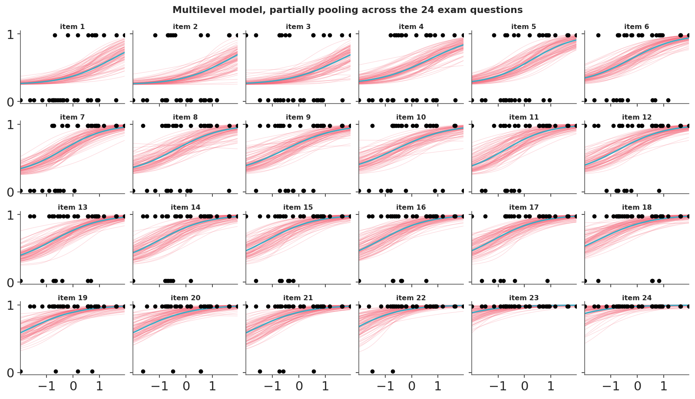
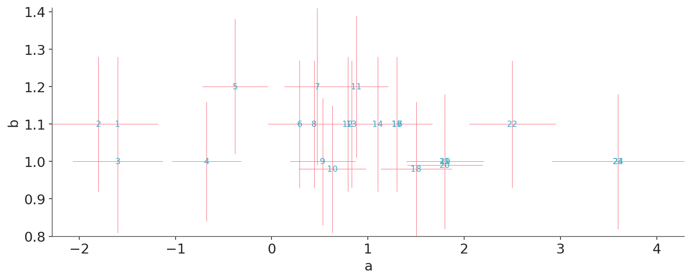
5.2 Multilevel model with correlation
print_stan(logit_guessing_multilevel_bivariate)data {
int N; // number of observations
int J; // number of students
int K; // number of items on exam
array[N] int<lower=0, upper=J> student;
array[N] int<lower=0, upper=K> item;
array[N] int<lower=0, upper=1> y;
vector[J] x;
vector[2] mu_mu_ab;
vector<lower=0>[2] sigma_mu_ab, mu_sigma_ab;
}
transformed data {
vector[J] x_adj = (x - mean(x))/sd(x);
}
parameters {
vector[2] mu_ab;
vector<lower=0>[2] sigma_ab;
array[K] vector[2] e_ab;
corr_matrix[2] Omega_ab;
}
transformed parameters {
vector[K] a;
vector[K] b;
for (k in 1:K) {
a[k] = mu_ab[1] + sigma_ab[1] * e_ab[k][1];
b[k] = mu_ab[2] + sigma_ab[2] * e_ab[k][2];
}
}
model {
e_ab ~ multi_normal([0,0], Omega_ab);
mu_ab ~ normal(mu_mu_ab, sigma_mu_ab);
sigma_ab ~ exponential(1/mu_sigma_ab);
Omega_ab ~ lkj_corr(1);
y ~ bernoulli(0.25 + 0.75*inv_logit(a[item] + b[item] .* x_adj[student]));
}longdata_6 = {
**longdata,
"mu_mu_ab": [0, 0],
"sigma_mu_ab": [5, 10],
"mu_sigma_ab": [5, 10]
}
dt_6 = az.from_cmdstanpy(logit_guessing_multilevel_bivariate.sample(data=longdata_6, show_progress=False))
plot_logit_grid_2(
dt_6,
"Multilevel model with correlation",
"Standardized exam score",
score_adj_jitt,
longdata["y"],
longdata["item"],
item_id,
guessprob=0.25
)
az.summary(dt_6, var_names=["mu_ab", "sigma_ab", "Omega_ab"])/home/osvaldo/anaconda3/envs/arviz_1/lib/python3.14/site-packages/arviz_stats/base/diagnostics.py:90: RuntimeWarning: invalid value encountered in scalar divide
(between_chain_variance / within_chain_variance + num_samples - 1) / (num_samples)
/home/osvaldo/anaconda3/envs/arviz_1/lib/python3.14/site-packages/arviz_stats/base/diagnostics.py:313: RuntimeWarning: invalid value encountered in scalar divide
varsd = varvar / evar / 4
/home/osvaldo/anaconda3/envs/arviz_1/lib/python3.14/site-packages/arviz_stats/base/diagnostics.py:313: RuntimeWarning: invalid value encountered in scalar divide
varsd = varvar / evar / 4| mean | sd | eti95_lb | eti95_ub | ess_bulk | ess_tail | r_hat | mcse_mean | mcse_sd | |
|---|---|---|---|---|---|---|---|---|---|
| mu_ab[0] | 0.81 | 0.38 | 0.067 | 1.6 | 774 | 1457 | 1.00 | 0.014 | 0.011 |
| mu_ab[1] | 1.093 | 0.178 | 0.78 | 1.5 | 3008 | 2317 | 1.00 | 0.0033 | 0.0027 |
| sigma_ab[0] | 1.7 | 0.38 | 1.1 | 2.5 | 1255 | 1568 | 1.00 | 0.011 | 0.011 |
| sigma_ab[1] | 0.3 | 0.21 | 0.014 | 0.81 | 1025 | 1982 | 1.00 | 0.0065 | 0.0054 |
| Omega_ab[0, 0] | 1 | 0 | 1 | 1 | 4000 | 4000 | NaN | 0 | NaN |
| Omega_ab[0, 1] | -0.37 | 0.47 | -0.96 | 0.69 | 251 | 338 | 1.02 | 0.026 | 0.016 |
| Omega_ab[1, 0] | -0.37 | 0.47 | -0.96 | 0.69 | 251 | 338 | 1.02 | 0.026 | 0.016 |
| Omega_ab[1, 1] | 1 | 0 | 1 | 1 | 4000 | 4000 | NaN | 0 | NaN |
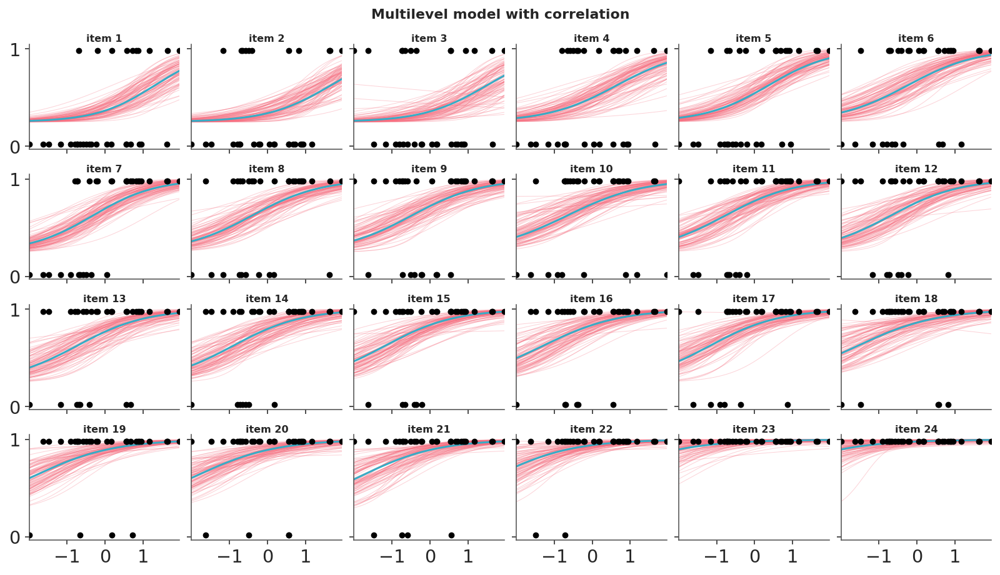
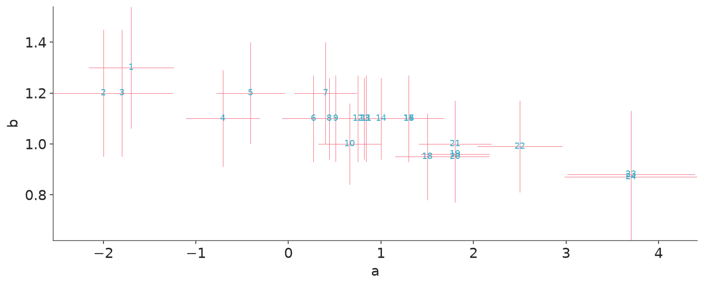
5.3 Multilevel model with correlation using Cholesky
print_stan(logit_guessing_multilevel_bivariate_cholesky)data {
int N; // number of observations
int J; // number of students
int K; // number of items on exam
array[N] int<lower=0, upper=J> student;
array[N] int<lower=0, upper=K> item;
array[N] int<lower=0, upper=1> y;
vector[J] x;
vector[2] mu_mu_ab;
vector<lower=0>[2] sigma_mu_ab, mu_sigma_ab;
}
transformed data {
vector[J] x_adj = (x - mean(x))/sd(x);
}
parameters {
vector[2] mu_ab;
vector<lower=0>[2] sigma_ab;
array[K] vector[2] e_ab;
cholesky_factor_corr[2] L_ab;
}
transformed parameters {
vector[K] a;
vector[K] b;
for (k in 1:K) {
a[k] = mu_ab[1] + sigma_ab[1] * e_ab[k][1];
b[k] = mu_ab[2] + sigma_ab[2] * e_ab[k][2];
}
}
model {
e_ab ~ multi_normal_cholesky([0,0], L_ab);
mu_ab ~ normal(mu_mu_ab, sigma_mu_ab);
sigma_ab ~ exponential(1/mu_sigma_ab);
L_ab ~ lkj_corr_cholesky(1);
y ~ bernoulli(0.25 + 0.75*inv_logit(a[item] + b[item] .* x_adj[student]));
}
generated quantities {
corr_matrix[2] Omega_ab = multiply_lower_tri_self_transpose(L_ab);
}longdata_7 = {
**longdata,
"mu_mu_ab": [0, 0],
"sigma_mu_ab": [5, 10],
"mu_sigma_ab": [5, 10]
}
dt_7 = az.from_cmdstanpy(logit_guessing_multilevel_bivariate_cholesky.sample(data=longdata_7, show_progress=False))
plot_logit_grid_2(
dt_7,
"Multilevel model with correlation: Cholesky parameterization",
"Standardized exam score",
score_adj_jitt,
longdata["y"],
longdata["item"],
item_id,
guessprob=0.25
)
az.summary(dt_7, var_names=["mu_ab", "sigma_ab", "Omega_ab"])/home/osvaldo/anaconda3/envs/arviz_1/lib/python3.14/site-packages/arviz_stats/base/diagnostics.py:90: RuntimeWarning: invalid value encountered in scalar divide
(between_chain_variance / within_chain_variance + num_samples - 1) / (num_samples)
/home/osvaldo/anaconda3/envs/arviz_1/lib/python3.14/site-packages/arviz_stats/base/diagnostics.py:313: RuntimeWarning: invalid value encountered in scalar divide
varsd = varvar / evar / 4
/home/osvaldo/anaconda3/envs/arviz_1/lib/python3.14/site-packages/arviz_stats/base/diagnostics.py:313: RuntimeWarning: invalid value encountered in scalar divide
varsd = varvar / evar / 4| mean | sd | eti95_lb | eti95_ub | ess_bulk | ess_tail | r_hat | mcse_mean | mcse_sd | |
|---|---|---|---|---|---|---|---|---|---|
| mu_ab[0] | 0.84 | 0.39 | 0.068 | 1.6 | 752 | 1084 | 1.01 | 0.014 | 0.011 |
| mu_ab[1] | 1.08 | 0.171 | 0.76 | 1.4 | 2368 | 2542 | 1.00 | 0.0035 | 0.0025 |
| sigma_ab[0] | 1.7 | 0.37 | 1.1 | 2.6 | 1263 | 2029 | 1.00 | 0.011 | 0.01 |
| sigma_ab[1] | 0.28 | 0.21 | 0.01 | 0.78 | 1052 | 1705 | 1.00 | 0.0061 | 0.0053 |
| Omega_ab[0, 0] | 1 | 0 | 1 | 1 | 4000 | 4000 | NaN | 0 | NaN |
| Omega_ab[0, 1] | -0.32 | 0.5 | -0.96 | 0.81 | 210 | 297 | 1.01 | 0.032 | 0.019 |
| Omega_ab[1, 0] | -0.32 | 0.5 | -0.96 | 0.81 | 210 | 297 | 1.01 | 0.032 | 0.019 |
| Omega_ab[1, 1] | 1 | 0 | 1 | 1 | 4000 | 4000 | NaN | 0 | NaN |
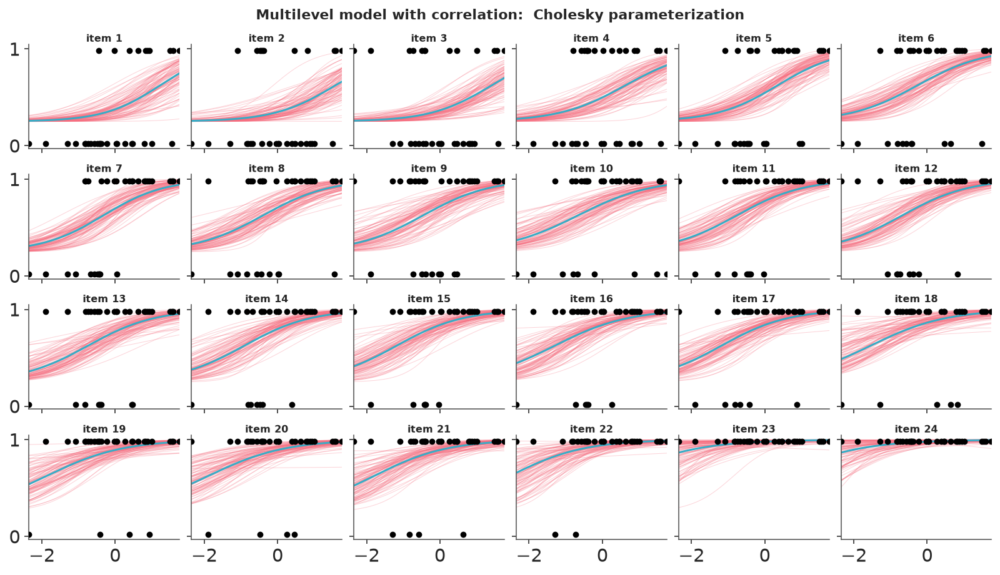
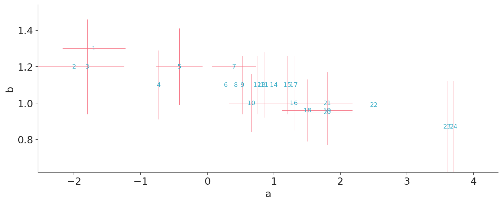
6 Item-response theory (IRT) models
6.1 Item-response model
print_stan(irt_guessing)data {
int N; // number of observations
int J; // number of students
int K; // number of items on exam
array[N] int<lower=0, upper=J> student;
array[N] int<lower=0, upper=K> item;
array[N] int<lower=0, upper=1> y;
real mu_mu_beta;
real<lower=0> sigma_mu_beta, mu_sigma_alpha, mu_sigma_beta;
}
parameters {
real mu_beta;
real<lower=0> sigma_alpha, sigma_beta;
vector<offset=0, multiplier=sigma_alpha>[J] alpha;
vector<offset=mu_beta, multiplier=sigma_beta>[K] beta;
}
model {
alpha ~ normal(0, sigma_alpha);
beta ~ normal(mu_beta, sigma_beta);
mu_beta ~ normal(mu_mu_beta, sigma_mu_beta);
sigma_alpha ~ exponential(1/mu_sigma_alpha);
sigma_beta ~ exponential(1/mu_sigma_beta);
y ~ bernoulli(0.25 + 0.75*inv_logit(alpha[student] - beta[item]));
}irt_data_11 = {
**longdata,
"mu_mu_beta": 0, "sigma_mu_beta": 5,
"mu_sigma_alpha": 5, "mu_sigma_beta": 5
}
dt_11 = az.from_cmdstanpy(irt_guessing.sample(data=irt_data_11, inits=2, show_progress=False))
plot_irt(
dt_11,
"Item-response model",
longdata["y"],
longdata["item"],
item_id,
guessprob=0.25
)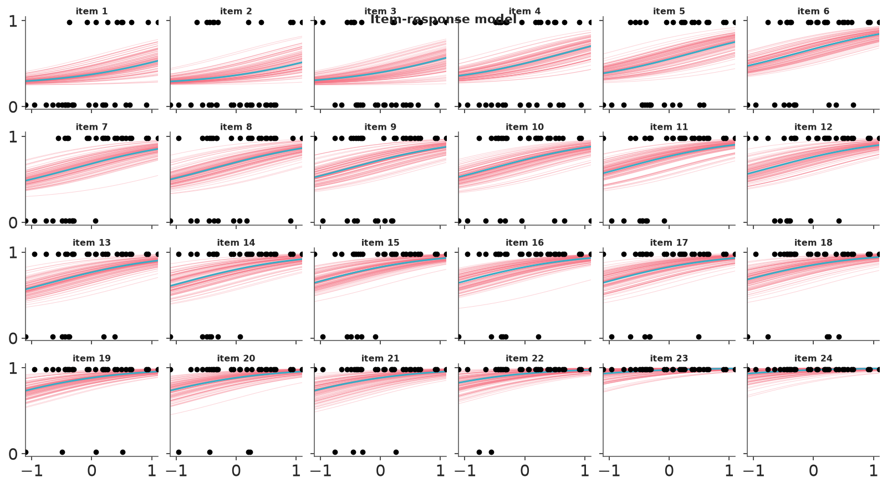
6.2 Item-response model with discrimination parameters
print_stan(irt_guessing_discrimination)data {
int N; // number of observations
int J; // number of students
int K; // number of items on exam
array[N] int<lower=0, upper=J> student;
array[N] int<lower=0, upper=K> item;
array[N] int<lower=0, upper=1> y;
real mu_mu_beta;
real<lower=0> sigma_mu_beta, mu_sigma_alpha, mu_sigma_beta, mu_sigma_gamma;
}
parameters {
real mu_beta;
real<lower=0> sigma_alpha, sigma_beta, sigma_gamma;
vector<offset=0, multiplier=sigma_alpha>[J] alpha;
vector<offset=mu_beta, multiplier=sigma_beta>[K] beta;
vector<offset=1, multiplier=sigma_gamma>[K] gamma;
}
model {
alpha ~ normal(0, sigma_alpha);
beta ~ normal(mu_beta, sigma_beta);
gamma ~ normal(1, sigma_gamma);
mu_beta ~ normal(mu_mu_beta, sigma_mu_beta);
sigma_alpha ~ exponential(1/mu_sigma_alpha);
sigma_beta ~ exponential(1/mu_sigma_beta);
sigma_gamma ~ exponential(1/mu_sigma_gamma);
y ~ bernoulli(0.25 + 0.75*inv_logit(gamma[item] .* (alpha[student] - beta[item])));
}irt_data_12 = {
**longdata,
"mu_mu_beta": 0, "sigma_mu_beta": 5,
"mu_sigma_alpha": 5, "mu_sigma_beta": 5,
"mu_sigma_gamma": 0.5
}
dt_12 = az.from_cmdstanpy(irt_guessing_discrimination.sample(data=irt_data_12, inits=2, show_progress=False))
plot_irt(
dt_12,
"Item-response model with discrimination parameters",
longdata["y"],
longdata["item"],
item_id,
guessprob=0.25
)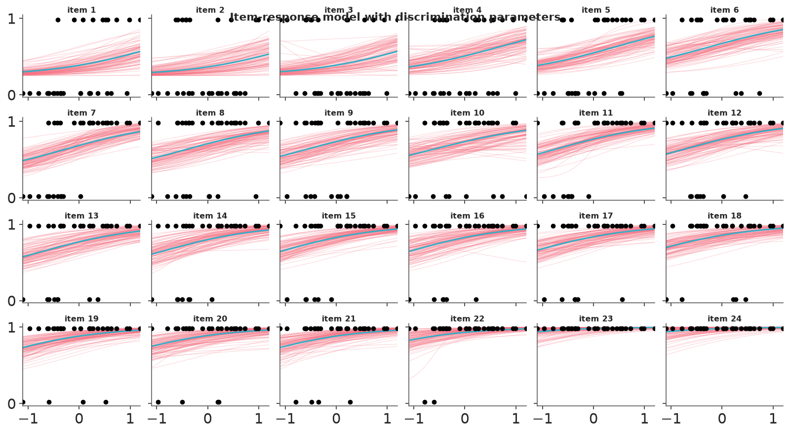
6.3 Item-response model with discrimination parameters with init
irt_data_13 = {
**longdata,
"mu_mu_beta": 0, "sigma_mu_beta": 5,
"mu_sigma_alpha": 5, "mu_sigma_beta": 5,
"mu_sigma_gamma": 0.5
}
dt_13 = az.from_cmdstanpy(irt_guessing_discrimination.sample(data=irt_data_13, inits=0.1, show_progress=False))
plot_irt(
dt_13,
"Item-response model with discrimination parameters",
longdata["y"],
longdata["item"],
item_id,
guessprob=0.25
)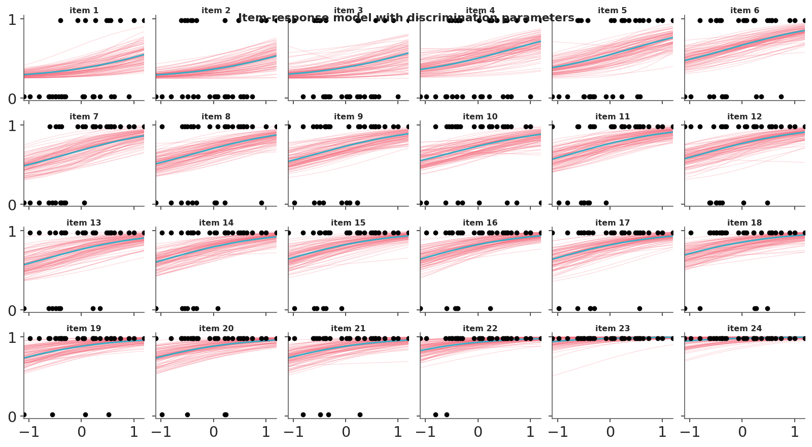
IRT plots
posterior = az.extract(dt_13, group="posterior")
alpha_sims = posterior["alpha"].values
beta_sims = posterior["beta"].values
gamma_sims = posterior["gamma"].values
from scipy.stats import median_abs_deviation
alpha_hat = np.median(alpha_sims, axis=1)
alpha_sd = median_abs_deviation(alpha_sims, axis=1, scale="normal")
beta_hat = np.median(beta_sims, axis=1)
beta_sd = median_abs_deviation(beta_sims, axis=1, scale="normal")
gamma_hat = np.median(gamma_sims, axis=1)
gamma_sd = median_abs_deviation(gamma_sims, axis=1, scale="normal")from scipy.stats import norm
rng_lo = min(np.min(alpha_hat - 3*alpha_sd), np.min(beta_hat - 3*beta_sd))
rng_hi = max(np.max(alpha_hat + 3*alpha_sd), np.max(beta_hat + 3*beta_sd))
x_range = np.linspace(rng_lo, rng_hi, 300)
fig, ax = plt.subplots(figsize=(6, 4))
ax.set_xlim(rng_lo, rng_hi)
ax.set_ylim(-1, 1)
ax.set_xlabel("Posterior distributions for student abilities (above) and item difficulties (below)")
ax.set_yticks([])
ax.spines[["top", "right", "left"]].set_visible(False)
# Student abilities (Gaussian curves above the axis)
for j in range(J):
ax.plot(x_range, norm.pdf(x_range, alpha_hat[j], alpha_sd[j]), color="red", lw=0.8)
# Item difficulties (Gaussian curves below the axis)
for k in range(K):
ax.plot(x_range, -norm.pdf(x_range, beta_hat[k], beta_sd[k]), color="red", lw=0.8)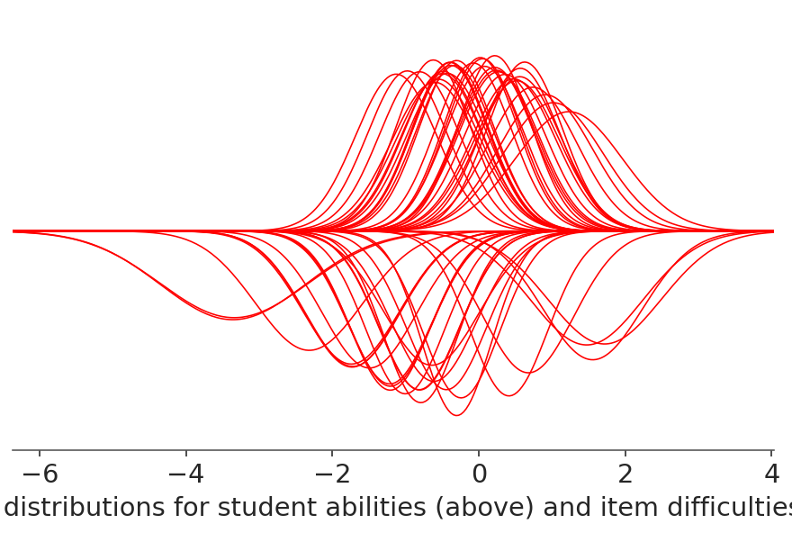
x_rng = [beta_hat.min() - beta_sd.max(), beta_hat.max() + beta_sd.max()]
y_rng = [gamma_hat.min() - gamma_sd.max(), gamma_hat.max() + gamma_sd.max()]
fig, ax = plt.subplots(figsize=(4, 3.2))
ax.set_xlim(x_rng[0], x_rng[1])
ax.set_ylim(y_rng[0], y_rng[1])
ax.set_xlabel(r"$\beta_k$")
ax.set_ylabel(r"$\gamma_k$")
ax.spines[["top", "right"]].set_visible(False)
for k in range(K):
ax.errorbar(beta_hat[k], gamma_hat[k], xerr=beta_sd[k], yerr=gamma_sd[k],
fmt='none', color='red', alpha=0.5, capsize=3)
ax.text(beta_hat[k], gamma_hat[k], str(item_id[k]), color='blue', fontsize=9)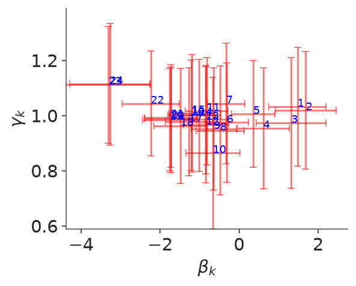
7 Prior predictive simulations
def prior_predictive(x, x_jitt, mu_a, sigma_a, mu_b, sigma_b, seed=None):
"""Generate prior predictive simulation"""
if seed is not None:
np.random.seed(seed)
a = np.random.normal(mu_a, sigma_a)
b = np.random.normal(mu_b, sigma_b)
y = np.random.binomial(1, expit(a + b * x))
fig, ax = plt.subplots(figsize=(7.5, 2.5))
ax.set_xlim(x.min() - 0.5, x.max() + 0.5)
ax.set_ylim(0, 1)
ax.set_xlabel("x")
ax.set_ylabel("y")
ax.set_xticks(np.arange(-2, 3, 1))
ax.set_yticks([0, 1])
ax.spines[["top", "right"]].set_visible(False)
y_jitter = 0.5 + 0.96 * (y - 0.5)
ax.scatter(x_jitt, y_jitter, s=20, color="blue", alpha=0.7)
return fig, axfig, axes = plt.subplots(2, 5, figsize=(7.5, 2.5))
axes = axes.flatten()
for i in range(10):
np.random.seed(SEED + i)
a = np.random.normal(0, 0.5)
b = np.random.normal(0, 0.5)
y = np.random.binomial(1, expit(a + b * score_adj))
ax = axes[i]
ax.set_xlim(-2.5, 2.5)
ax.set_ylim(0, 1)
ax.set_xticks([])
ax.set_yticks([])
ax.spines[["top", "right", "left", "bottom"]].set_visible(False)
y_jitter = 0.5 + 0.96 * (y - 0.5)
ax.scatter(score_adj_jitt, y_jitter, s=15, color="blue", alpha=0.7)
fig.suptitle("10 prior predictive simulations with a ~ normal(0, 0.5) and b ~ normal(0, 0.5)", fontsize=8)Text(0.5, 0.98, '10 prior predictive simulations with a ~ normal(0, 0.5) and b ~ normal(0, 0.5)')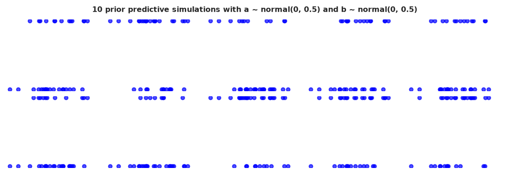
fig, axes = plt.subplots(2, 5, figsize=(7.5, 2.5))
axes = axes.flatten()
for i in range(10):
np.random.seed(SEED + 10 + i)
a = np.random.normal(0, 5)
b = np.random.normal(0, 5)
y = np.random.binomial(1, expit(a + b * score_adj))
ax = axes[i]
ax.set_xlim(-2.5, 2.5)
ax.set_ylim(0, 1)
ax.set_xticks([])
ax.set_yticks([])
ax.spines[["top", "right", "left", "bottom"]].set_visible(False)
y_jitter = 0.5 + 0.96 * (y - 0.5)
ax.scatter(score_adj_jitt, y_jitter, s=15, color="blue", alpha=0.7)
fig.suptitle("10 prior predictive simulations with a ~ normal(0, 5) and b ~ normal(0, 5)", fontsize=8)Text(0.5, 0.98, '10 prior predictive simulations with a ~ normal(0, 5) and b ~ normal(0, 5)')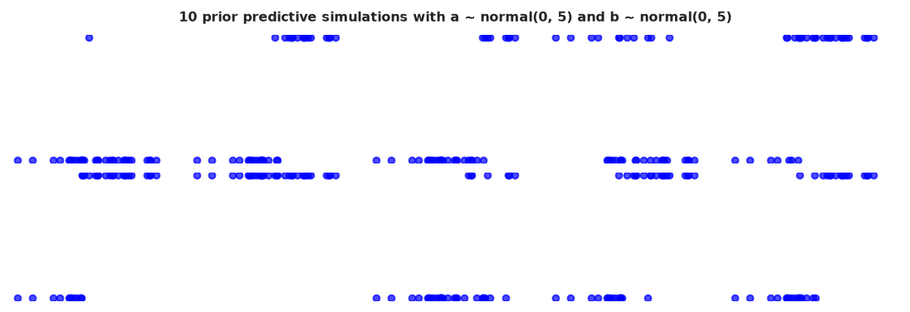
fig, axes = plt.subplots(2, 5, figsize=(7.5, 2.5))
axes = axes.flatten()
for i in range(10):
np.random.seed(SEED + 20 + i)
a = np.random.normal(0, 50)
b = np.random.normal(0, 50)
y = np.random.binomial(1, expit(a + b * score_adj))
ax = axes[i]
ax.set_xlim(-2.5, 2.5)
ax.set_ylim(0, 1)
ax.set_xticks([])
ax.set_yticks([])
ax.spines[["top", "right", "left", "bottom"]].set_visible(False)
y_jitter = 0.5 + 0.96 * (y - 0.5)
ax.scatter(score_adj_jitt, y_jitter, s=15, color="blue", alpha=0.7)
fig.suptitle("10 prior predictive simulations with a ~ normal(0, 50) and b ~ normal(0, 50)", fontsize=8)Text(0.5, 0.98, '10 prior predictive simulations with a ~ normal(0, 50) and b ~ normal(0, 50)')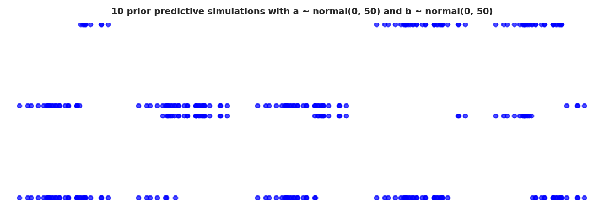
8 Breaking the model
print_stan(logit_guessing_uncentered)data {
int J;
array[J] int<lower=0, upper=1> y;
vector[J] x;
real mu_a, mu_b;
real<lower=0> sigma_a, sigma_b;
}
parameters {
real a, b;
real<lower=0, upper=1> p0;
}
model {
a ~ normal(mu_a, sigma_a);
b ~ normal(mu_b, sigma_b);
y ~ bernoulli(0.25 + 0.75*inv_logit(a + b*x));
}Simulate data
np.random.seed(123)
J_break = 32
x_break = np.random.uniform(10, 20, J_break)
a_ = -6
b_ = 0.4
y_break = np.random.binomial(1, 0.25 + 0.75 * expit(a_ + b_ * x_break))
m_x = x_break.mean()
s_x = x_break.std()
x_adj_break = (x_break - m_x) / s_x
break_data = {
"J": J_break,
"x": x_break.tolist(),
"y": y_break.tolist(),
"mu_a": 0,
"sigma_a": 1000,
"mu_b": 0,
"sigma_b": 1000
}break_1_fit = logit_guessing_uncentered.sample(data=break_data, show_progress=False)posterior = az.extract(az.from_cmdstanpy(break_1_fit), group="posterior")
a_break = posterior["a"].values.flatten()
b_break = posterior["b"].values.flatten()
n_sims = len(a_break)fig, ax = plt.subplots(figsize=(9, 3))
ax.set_xlim(x_break.min(), x_break.max())
ax.set_ylim(0, 1)
ax.set_xlabel("Exam score")
ax.set_ylabel("Pr (correct answer)")
ax.spines[["top", "right"]].set_visible(False)
x_line = np.linspace(x_break.min() - 1, x_break.max() + 1, 200)
for s in np.random.choice(n_sims, size=min(20, n_sims), replace=False):
y_line = 0.25 + 0.75 * expit(a_break[s] + b_break[s] * x_line)
ax.plot(x_line, y_line, color="red", alpha=0.5, linewidth=0.5)
y_true = 0.25 + 0.75 * expit(a_ + b_ * x_line)
ax.plot(x_line, y_true, color="black", linewidth=2)
y_jitter = 0.5 + 0.985 * (y_break - 0.5)
ax.scatter(x_break, y_jitter, s=20, color="black", alpha=0.5)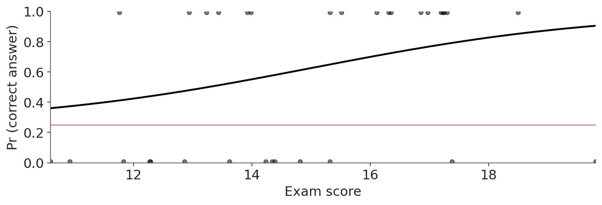
break_2_fit = logit_guessing.sample(data=break_data, show_progress=False)
print(break_2_fit)CmdStanMCMC: model=logit_guessing chains=4['method=sample', 'algorithm=hmc', 'adapt', 'engaged=1']
csv_files:
/tmp/tmp28f_vhu6/logit_guessingj3bo3rle/logit_guessing-20260625175742_1.csv
/tmp/tmp28f_vhu6/logit_guessingj3bo3rle/logit_guessing-20260625175742_2.csv
/tmp/tmp28f_vhu6/logit_guessingj3bo3rle/logit_guessing-20260625175742_3.csv
/tmp/tmp28f_vhu6/logit_guessingj3bo3rle/logit_guessing-20260625175742_4.csv
output_files:
/tmp/tmp28f_vhu6/logit_guessingj3bo3rle/logit_guessing-20260625175742_0-stdout.txt
/tmp/tmp28f_vhu6/logit_guessingj3bo3rle/logit_guessing-20260625175742_1-stdout.txt
/tmp/tmp28f_vhu6/logit_guessingj3bo3rle/logit_guessing-20260625175742_2-stdout.txt
/tmp/tmp28f_vhu6/logit_guessingj3bo3rle/logit_guessing-20260625175742_3-stdout.txtposterior = az.extract(az.from_cmdstanpy(break_2_fit), group="posterior")
a_break = posterior["a"].values.flatten()
b_break = posterior["b"].values.flatten()
n_sims = len(a_break)fig, ax = plt.subplots(figsize=(9, 3))
ax.set_xlim(-2, 2)
ax.set_ylim(0, 1)
ax.set_xlabel("Standardized exam score")
ax.set_ylabel("Pr (correct answer)")
ax.spines[["top", "right"]].set_visible(False)
x_line = np.linspace(-2.5, 2.5, 200)
for s in np.random.choice(n_sims, size=min(20, n_sims), replace=False):
y_line = 0.25 + 0.75 * expit(a_break[s] + b_break[s] * x_line)
ax.plot(x_line, y_line, color="red", alpha=0.5, linewidth=0.5)
y_true = 0.25 + 0.75 * expit(a_ + b_ * (m_x + s_x * x_line))
ax.plot(x_line, y_true, color="black", linewidth=2)
y_jitter = 0.5 + 0.985 * (y_break - 0.5)
ax.scatter(x_adj_break, y_jitter, s=20, color="black", alpha=0.5)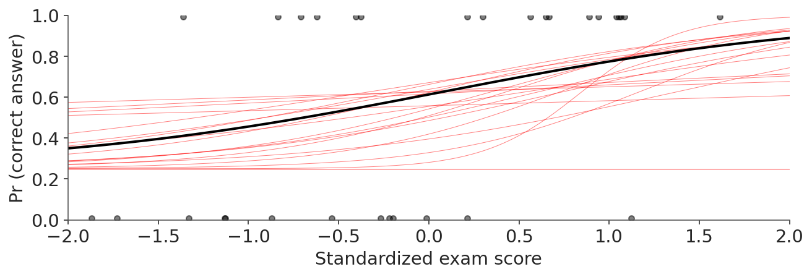
longdata_break = {
**longdata,
"mu_mu_a": 0, "sigma_mu_a": 5,
"mu_mu_b": 0, "sigma_mu_b": 5,
"mu_sigma_a": 5, "mu_sigma_b": 5
}
dt_break = az.from_cmdstanpy(logit_guessing_multilevel.sample(data=longdata_break, show_progress=False))
plot_logit_grid_2(
dt_break,
"Breaking the model",
"Exam score",
score_jitt,
longdata["y"],
longdata["item"],
item_id,
guessprob=0.25
)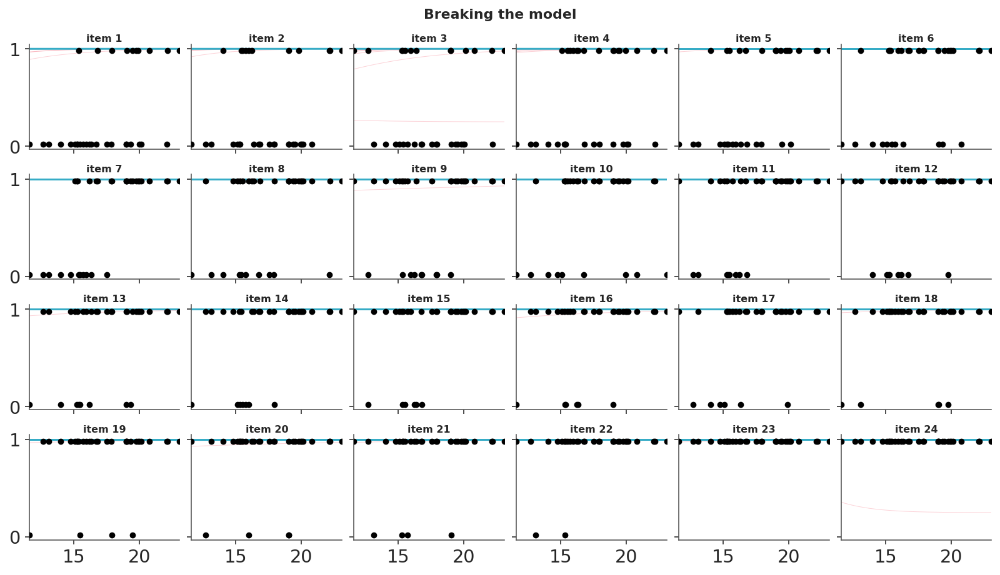
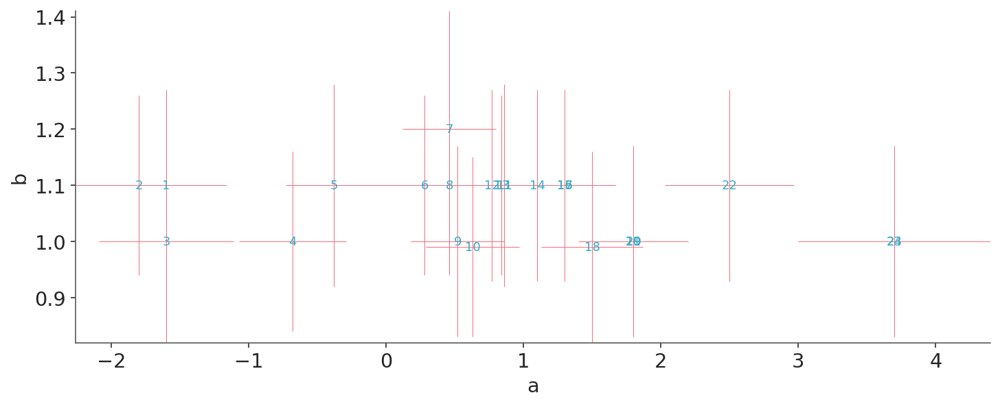
References
Gelman, A., and A. Vehtari. 2024. Active Statistics: Stories, Games, Problems, and Hands-on Demonstrations for Applied Regression and Causal Inference. Cambridge University Press.
Licenses
- Code © 2022–2025, Andrew Gelman, licensed under BSD-3.
- Text © 2022–2025, Andrew Gelman, licensed under CC-BY-NC 4.0.